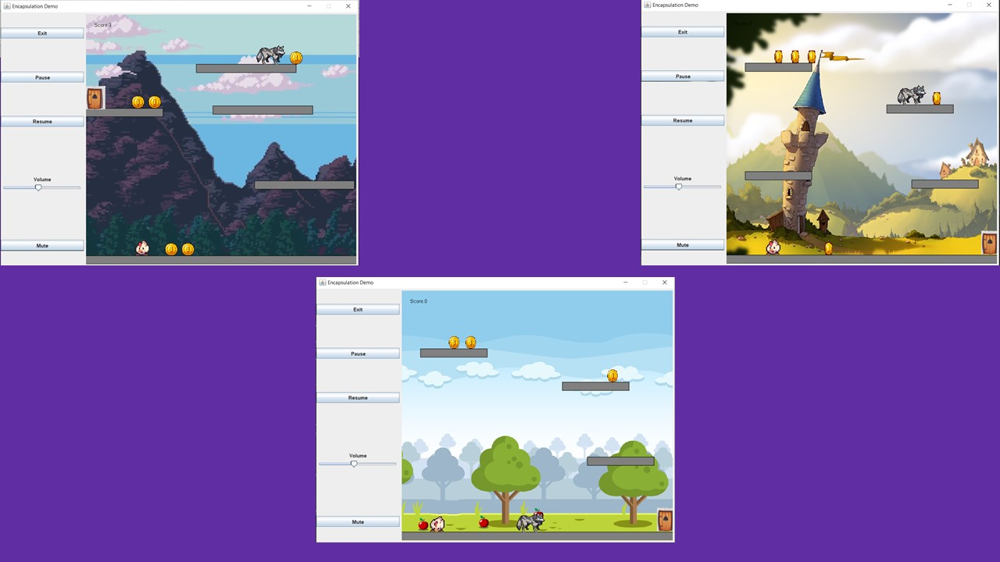

Chicken run
This game was made using Java.
This game was an assignment during my first year of university and I used the City Engine to run it. It contains 3 levels, enemies both moving and stationary ,collectibles which must be collected in order to progress to the next level and local saving and loading of levels. Furthermore I also implemented a simple GUI to allow the user to control the game sound, pause the game, mute or exit.